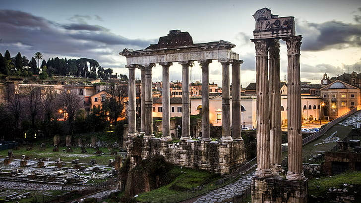
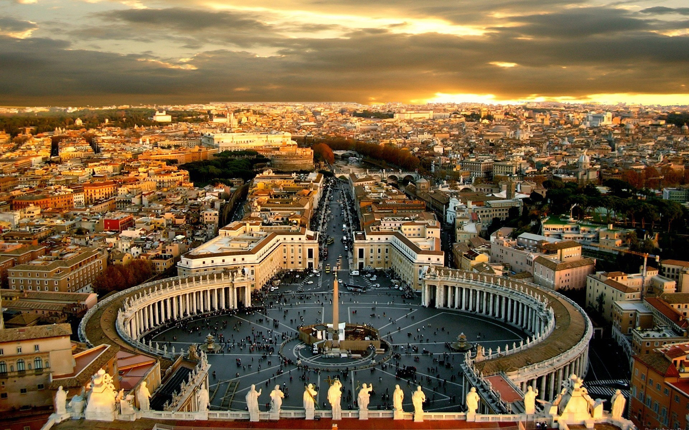
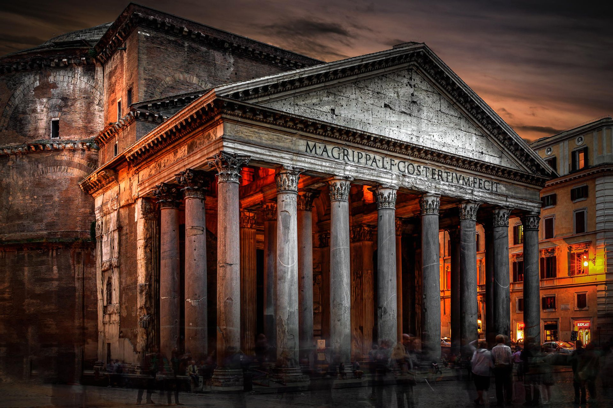
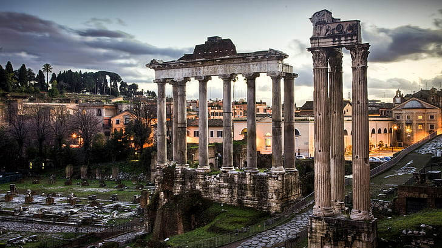
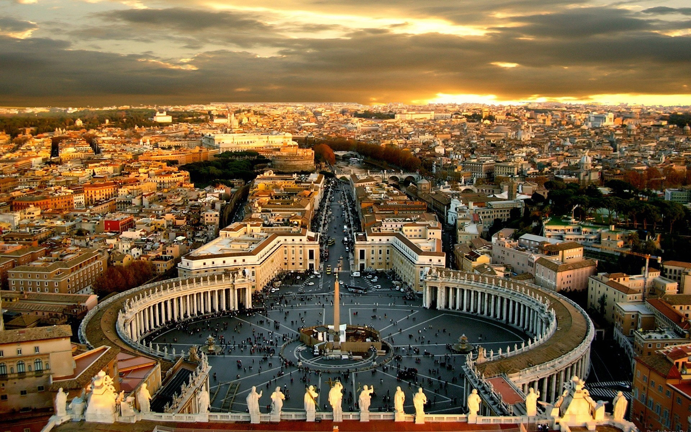
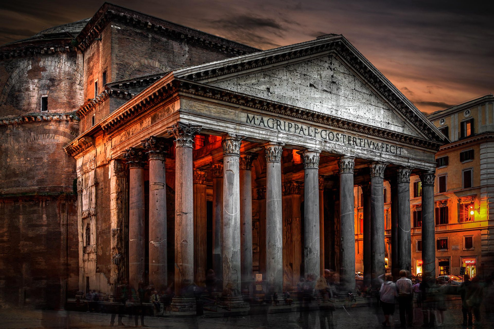
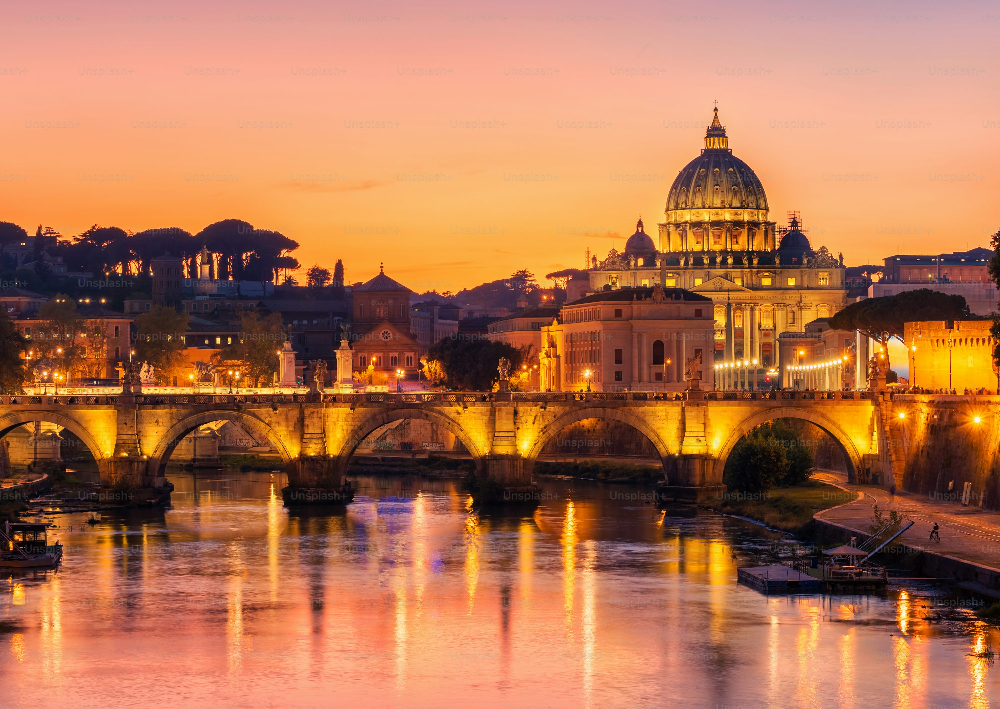
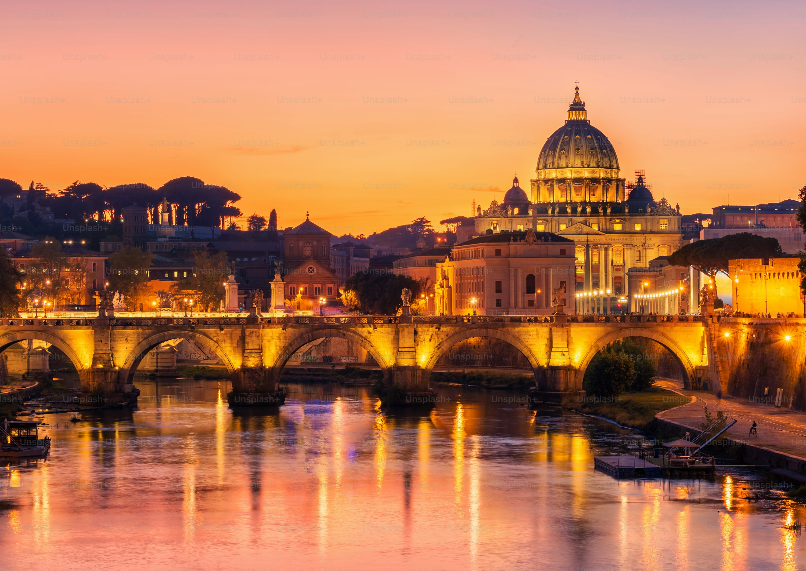
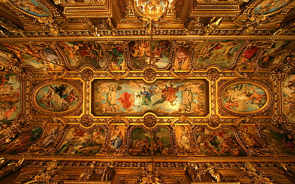
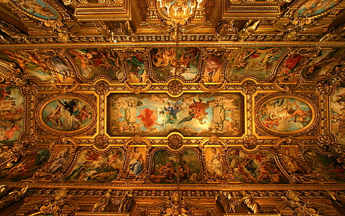

Heritage Sites
Explore the beauty of Rome through these stunning photos of its heritage sites.
 





 

 

Colosseum
The Colosseum, also known as the Flavian Amphitheatre, is an iconic symbol of Imperial Rome. Built in 80 AD, it was used for gladiatorial contests and public spectacles. It could hold up to 80,000 spectators.
Learn more about the ColosseumRoman Forum
The Roman Forum was the center of Roman public life for centuries. It was the site of triumphal processions, elections, public speeches, and commercial affairs. Today, it stands as a sprawling ruin of architectural fragments.
Learn more about the Roman ForumVatican City
Vatican City is the smallest independent state in the world and the spiritual center of the Catholic Church. It is home to St. Peter's Basilica, the Sistine Chapel, and the Vatican Museums.
Learn more about Vatican CityPantheon
The Pantheon is a former Roman temple, now a church, and one of the best-preserved ancient Roman buildings. Its dome is the largest unreinforced concrete dome in the world.
Learn more about the PantheonTrevi Fountain
The Trevi Fountain is the largest Baroque fountain in Rome and one of the most famous fountains in the world. Tradition holds that throwing a coin into the fountain ensures a return to Rome.
Learn more about the Trevi FountainSt. Peter's Basilica
St. Peter's Basilica is one of the largest and most renowned churches in the world. It is considered one of the holiest Catholic shrines and is the burial site of Saint Peter, one of the twelve apostles of Jesus.
Learn more about St. Peter's BasilicaSpanish Steps
The Spanish Steps are a set of steps climbing a steep slope between the Piazza di Spagna and the Trinità dei Monti church. They are a popular tourist attraction and a great spot for people-watching.
Learn more about the Spanish StepsSistine Chapel
The Sistine Chapel is famous for its Renaissance frescoes, particularly Michelangelo's ceiling and "The Last Judgment." It is part of the Vatican Museums and serves as the papal chapel.
Learn more about the Sistine Chapel